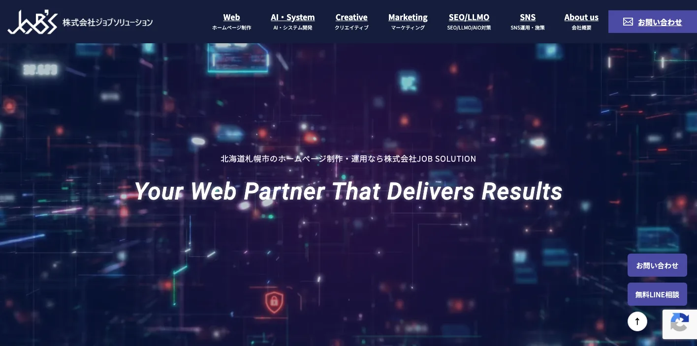
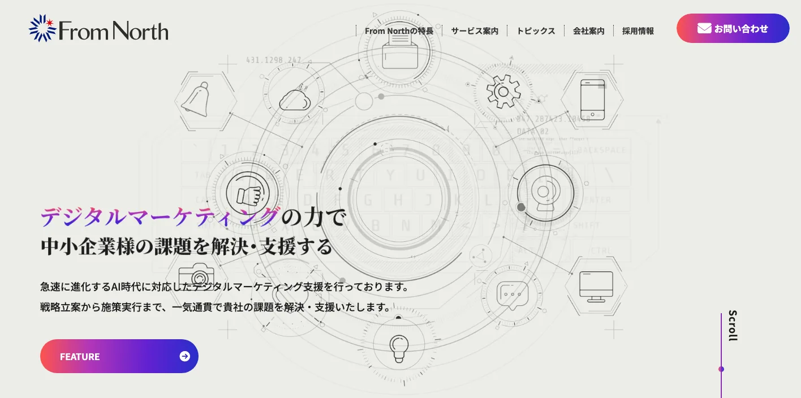
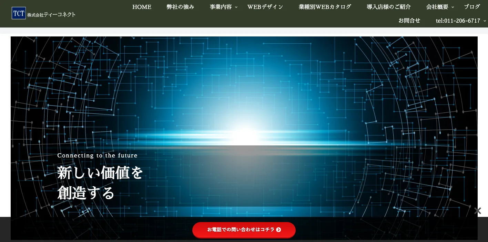
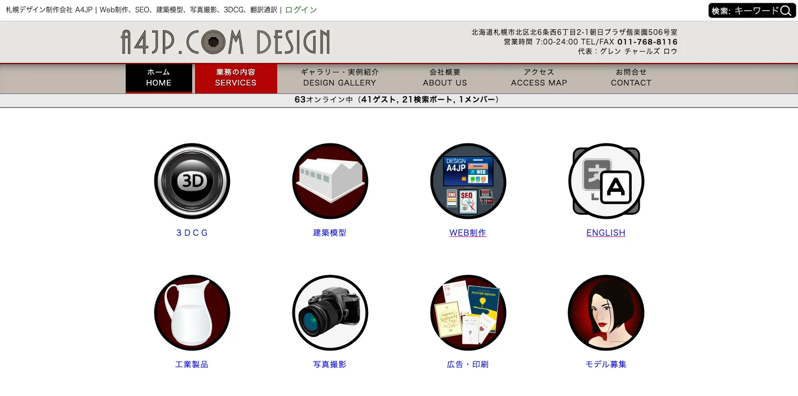
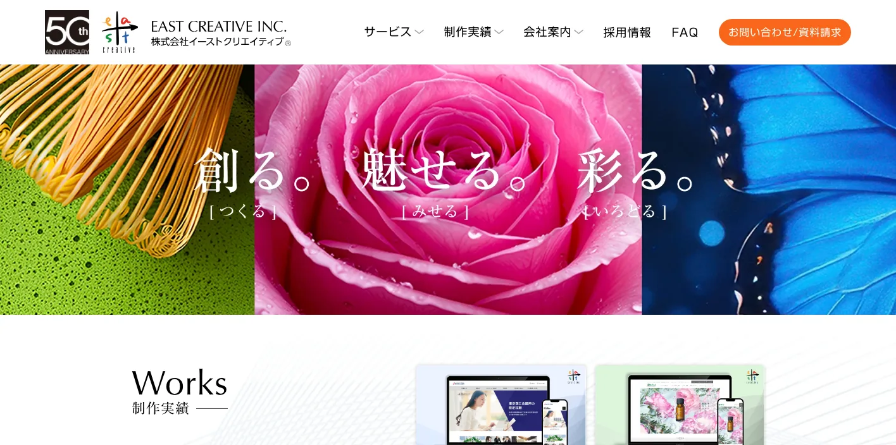
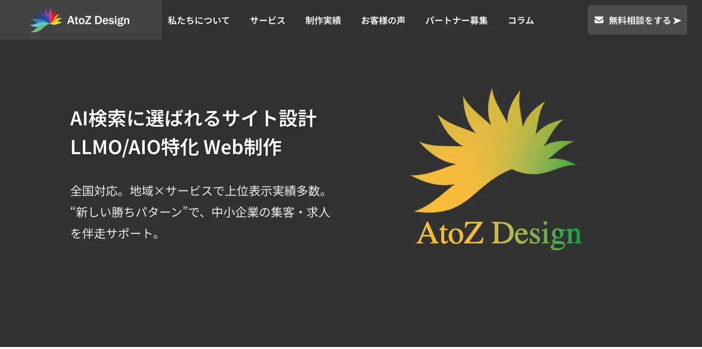
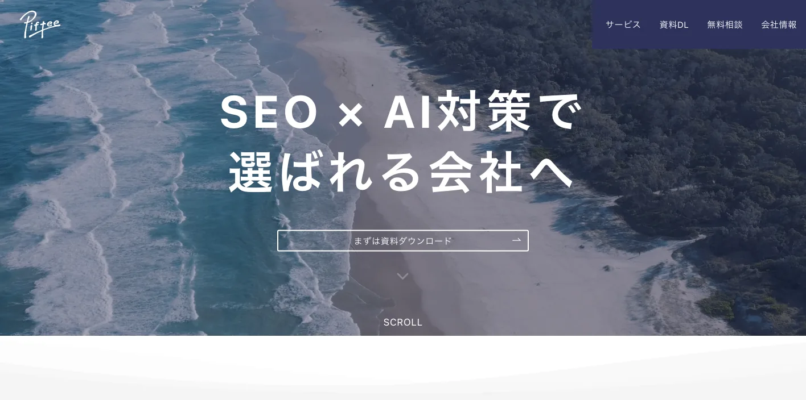
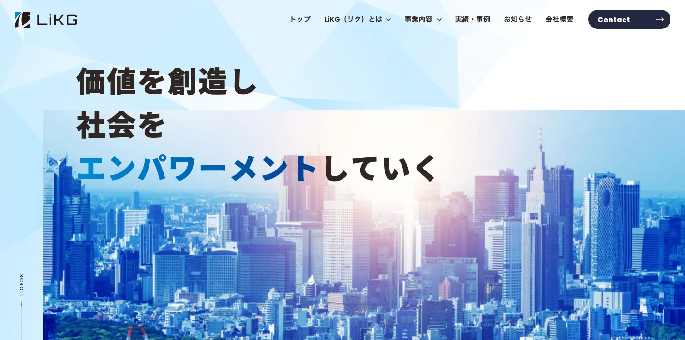
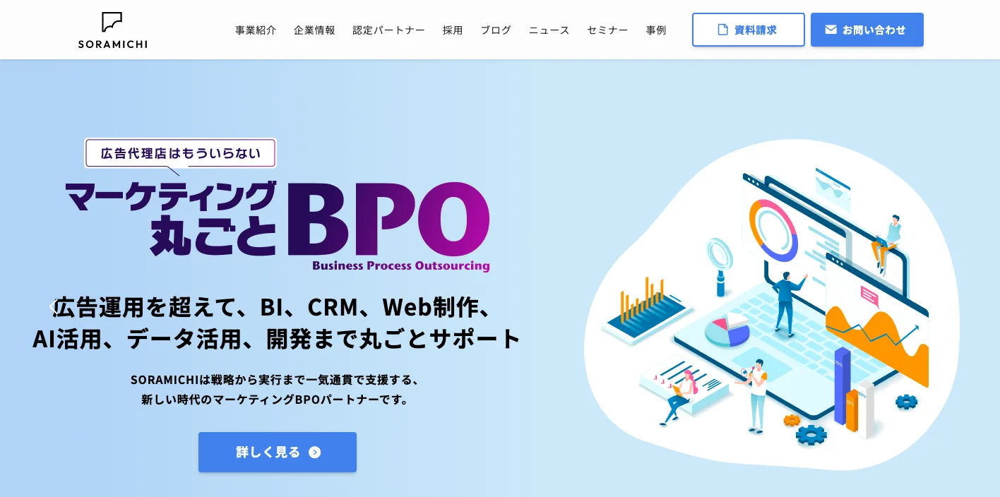

北海道でおすすめのLLMO会社10選｜費用相場と選び方もわかりやすく解説

北海道でLLMO会社を選ぶときは、単に「AI検索対策に対応しているか」だけでは足りません。札幌の都市型商圏、道央の物流・製造、道南の観光・医療、道東・道北の広域対応まで、同じ道内でも検索される文脈が大きく違うからです。
観光・宿泊・飲食のような来訪型ビジネスと、食品製造・水産・物流のようなBtoB型ビジネスでは、AIに伝えるべき情報が変わります。北海道で依頼先を探すなら、地域差と業種差の両方を前提に設計できるかを見たほうが失敗しにくいです。
この記事では、北海道で比較対象にしやすいLLMO会社を10社整理し、その後に比較ポイント、費用相場、FAQ、まとめまで順番に解説します。まずはLLMO対策の基本を押さえたい方は基礎記事から、全国の比較軸も見たい方はLLMO対策会社の比較記事や東京の比較記事もあわせて確認してみてください。現状把握から始めたい場合は無料LLMO診断も活用できます。
目次

北海道でおすすめのLLMO会社10選
今回は、札幌拠点がある会社、または北海道の広域商圏でも説明しやすい公開サービスを持つ会社を中心に整理しました。完全な順位付けではなく、北海道企業が比較検討しやすいように、拠点性と支援の軸がわかる形で並べています。
特に北海道では、札幌市内だけを想定するのか、道央・道南・道東・道北まで含むのかで必要な支援が変わります。まずは「自社に近い相談先か」「広域導線まで見てくれるか」を表で確認してから各社の特徴を見ると判断しやすいです。
| 会社名 | 拠点性 | 向いている企業 | 支援の軸 |
|---|---|---|---|
| 株式会社JOB SOLUTION | 札幌本社 | 制作とAI検索対応をまとめて相談したい道内企業 | Web制作・SEO/LLMO/AIO |
| 株式会社From North | 札幌本社 | 札幌起点で全道商圏まで見たい企業 | LLMO/GEO・SEO・Web制作 |
| 株式会社ティーコネクト | 札幌本社 | 店舗・地域サービス・MEO重視の企業 | GEO・MEO・SEO・AI搭載HP |
| A4JP | 札幌拠点 | インバウンドや多言語も意識したい企業 | SEO・デザイン・翻訳 |
| 株式会社イーストクリエイティブ | 全国対応 | 大規模サイトやコーポレートサイト | LLMO/AEO・Web改修 |
| AtoZ Design | 全国対応 | 飲食・美容・クリニック・観光系の中小企業 | LLMO/AIO対応ホームページ制作 |
| 株式会社Piftee | 全国対応 | SEOとAI検索対策を一体で進めたい企業 | SEO+AIOコンサル |
| 株式会社LiKG | 全国対応 | 診断から記事制作まで任せたい企業 | LLMO診断・SEO/LLMO伴走 |
| 株式会社SORAMICHI | 全国対応 | DXやブランド戦略まで絡む企業 | LLMO/AIO・マーケDX |
| 株式会社ジオコード | 全国対応 | 実装や改善まで一気通貫で進めたい企業 | SEO・コンテンツ・AIO/LLMO |
株式会社AIMAは北海道本社の会社ではありませんが、全国対応でLLMO支援を提供しています。月額5万円のLLMO支援は初期費用なし・1ヶ月単位で始められ、質問設計、記事制作、引用チェックに絞って実務を進められます。札幌だけでなく道央・道南・道東・道北まで広域に情報を整理したい場合も、まずは無料LLMO診断から確認できます。
1. 株式会社JOB SOLUTION

株式会社JOB SOLUTIONは、札幌市西区に本社を置くWeb制作・Webマーケティング会社です。会社概要では、WordPressサイト構築、AIサービス開発、SEO・LLMO・AIO対策、SNS施策までを事業内容として公開しており、制作とAI検索対応を同じ会社で進めやすいのが特徴です。
北海道の建設業、医療、飲食のように、地域密着と実装の両方が必要な業種と相性がよい会社です。札幌の制作会社に相談しつつ、道内企業としてAI検索にも手を打ちたい場合の比較候補になりやすいです。
参考：株式会社JOB SOLUTION｜SEO・LLMO・AIO対策
2. 株式会社From North

株式会社From Northは、札幌市中央区に本社を置くデジタルマーケティング会社です。公式サイトでは、LLMO/GEO対策、SEO対策、MEO対策、Web広告運用、Web制作を公開しており、北海道発の会社として事業活動に貢献する姿勢を明示しています。
北海道内はもちろん、東北まで含めた広域商圏に対応する前提で相談しやすいのが強みです。札幌市内の競争だけでなく、全道向けの導線や地方企業の広域集客まで踏み込んで進めたい会社に向いています。
3. 株式会社ティーコネクト

株式会社ティーコネクトは、札幌市でAIを活用したホームページ制作、GEO対策、MEO対策、SEO対策を打ち出している会社です。会社概要ページでも、札幌という地域に根を下ろし、生成AIを活用したWeb集客を支援する方針が明示されています。
特に、札幌市内の店舗、クリニック、地域サービスのように、MEOとWebサイト改善を切り離しにくい業種と相性がよいです。AI検索だけでなく、Googleマップや地域名検索もセットで強化したい会社が比較対象に入れやすいタイプです。
4. A4JP

A4JPは、札幌市北区を拠点とするデザイン制作会社で、公式サイトではSEO対策、Web制作、翻訳通訳、写真撮影などを案内しています。札幌のSEO対策会社ページも公開しており、制作と多言語対応の両面から相談しやすいのが特徴です。
北海道では、観光、宿泊、飲食、アクティビティのようにインバウンドを含む情報整備が必要な事業者も多くあります。A4JPは、SEOだけでなく翻訳やビジュアル制作も含めて検討したい会社に向いています。
5. 株式会社イーストクリエイティブ

株式会社イーストクリエイティブは、LLMO/AEO対策サービスを明確に打ち出しているWeb制作会社です。サービスページでは、ChatGPTやAI Overviewが正確に読み取れる構造への改修を訴求しており、会社案内でもLLMO対策/AEO対策を構築・運用保守の一つとして案内しています。
北海道の中でも、観光施設、大学、自治体連携サイト、企業グループサイトのように、ページ数が多く情報設計が複雑な案件で比較しやすい会社です。大規模な情報整理や構造改修が必要な企業と相性がよいです。
参考：株式会社イーストクリエイティブ｜LLMO/AEO対策サービス
6. AtoZ Design

AtoZ Designは、LLMO・AIO対策に強いホームページ制作を打ち出している全国対応の制作会社です。サービスページでは、SEO・MEO・AIO/LLMO対応のホームページ制作を案内しており、会社紹介では全国対応で北は北海道までサポートすると明記しています。
飲食店、美容室、クリニックなど、来訪前に比較されやすい業種と親和性が高く、北海道でも観光客向けの店舗や地域密着サービスの整理に向いています。小規模事業者でも相談しやすい温度感で、AI検索に強いページを作りたい会社に合います。
参考：AtoZ Design｜SEO・MEO・AIO/LLMO対応ホームページ制作
7. 株式会社Piftee

株式会社Pifteeは、SEO+AIOコンサルティングを提供する会社で、公式にAIO・LLMO・GEO・AEOまで含めたAI対策を案内しています。10年以上のSEO経験と自社メディア運用の知見を基盤に、戦略立案から施策運用、モニタリングまで伴走する点が強みです。
北海道で、すでに一定のコンテンツ資産があり、AI検索対策をSEOの延長線上で強化したい会社に向いています。SaaS、BtoB、EC、比較サイトなど、情報量が多く運用改善の余地が大きいサイトと相性がよいです。
8. 株式会社LiKG

株式会社LiKGは、LLMOコンサルティングを単独サービスとして公開している会社です。サービスページでは、LLMO診断、LLMO×SEOコンサルティング、EEAT強化記事制作まで明示しており、専任コンサルタントが必要な人材を組成して支援する体制を案内しています。
北海道の企業でも、一次情報を増やしながらAI検索での引用を狙いたい会社、オウンドメディアや記事制作を絡めて進めたい会社に向いています。調査、診断、記事制作を一連で回したい企業は比較候補に入れやすいです。
9. 株式会社SORAMICHI

株式会社SORAMICHIは、LLMO/AIOコンサルティングサービスを提供するDXコンサルティング会社です。サービスページでは、SEO支援とマーケティングDXの実績を活かし、生成AI時代の検索最適化をトータルで支援すると案内しています。
北海道で、単なる集客記事の改善だけではなく、ブランド施策、DX、全社的な情報整理まで含めて考えたい会社に向いています。複数部門が関わる案件や、成長フェーズの企業で比較しやすい会社です。
参考：株式会社SORAMICHI｜LLMO/AIOコンサルティングサービス
10. 株式会社ジオコード

株式会社ジオコードは、SEO対策、コンテンツマーケティング、UI/UX改善とあわせてAIO・LLMOなどのAI最適化を支援している上場企業です。サービスページでは、通常プラン15万円からの料金例や、実装を含めた組み合わせプランを公開しています。
北海道の企業で、SEOの土台からコンテンツ、実装、デザイン改善まで一気通貫で任せたい場合に検討しやすい会社です。社内リソースが限られ、施策の実行まで外部に寄せたい会社と相性がよいです。
参考：株式会社ジオコード｜SEO対策・AIO・LLMOなどAI最適化も徹底支援
他地域との違いまで見たい方は、大阪の比較記事や福岡の比較記事もあわせて確認すると、北海道で何を優先すべきかが見えやすくなります。
北海道のLLMO会社を比較する際のポイント
北海道でLLMO会社を選ぶときは、単に「AIに詳しそうか」だけでは判断しにくいです。北海道データブック2025では、人口は522万4,614人、人口密度は67人/km2で全国の約5分の1、市部人口は82.5%とされており、札幌周辺に人が集まりつつも、全道では広域商圏が前提になります。
また、北海道の経済は観光、食、物流、医療、DX/GXが重なり合って動いています。同じ「北海道向け」の施策でも、札幌の都市型サービスと、地方都市の広域対応型サービスとでは、AIに伝えるべき情報が変わります。
ここでは、北海道で依頼先を比較するときに見ておきたい観点を、道内の公式統計や制度情報をもとに整理します。
札幌基点でも全道商圏まで設計できるか
北海道では、札幌だけを見ていると施策が浅くなりやすいです。人口は札幌や千歳など一部自治体に集まる一方で、全道では167市町村が減少しており、エリアごとに検索され方が違います。札幌市内向けの「近場で比較する検索」と、地方都市や郡部からの「対応エリアで選ぶ検索」は同じではありません。
そのため、北海道のLLMO会社を選ぶなら、単に札幌の会社かどうかではなく、札幌起点のページ設計に加えて、対応地域、出張範囲、オンライン対応、複数拠点の導線まで整理できるかを見たほうがよいです。道内で広域に仕事を取る会社ほど、この設計力が重要になります。
観光・宿泊・飲食の季節変動とインバウンドを理解しているか
北海道観光の現況2025では、2024年度の北海道観光入込客数（実人数）は4,964万人で前年比3.9％増となっています。さらに交通分野では、2024年度の新千歳空港国際線利用者数が約389万人、2023年度の新千歳空港国内線乗客数が2,003万人とされており、北海道の観光導線は空港起点の動きと強く結びついています。
観光・宿泊・飲食のLLMOでは、札幌、ニセコ、富良野、函館、阿寒・知床のようにエリアごとに検索意図がまるで違います。季節、アクセス、多言語、周遊、価格帯、予約動線まで含めて整理し、「北海道旅行のどのシーンで比較されるか」を具体化できる会社のほうが成果につながりやすいです。
食品製造・水産・物流の一次情報を強みに変えられるか
北海道データブック2025_工業・企業立地では、工業出荷額は6兆6,413億円で、そのうち食料品製造業が2兆3,854億円、全体の35.9%を占めるとされています。また、水産業では2023年の海面漁業・養殖業の生産が119万トン、2,916億円で全国1位です。北海道のBtoB領域では、食品、水産、物流、加工、卸の比重が高く、一般的なサービス業の見せ方だけでは弱くなります。
この領域で重要なのは、サービス紹介を増やすことではなく、取扱品目、加工体制、配送条件、納期、認証、導入実績、供給可能エリアなどの一次情報を整理することです。AIが「この会社は何をどこまでできるのか」を誤読しにくい構造にできるかが、北海道のBtoBでは特に重要です。
医療・介護・生活密着サービスの広域性を理解しているか
北海道の65歳以上人口割合は32.2%で、地域医療構想でも2025年に向けて病院完結型から地域完結型の医療へ転換する必要性が示されています。つまり、北海道では医療・介護・生活サービスの検索が、都市部の短距離比較だけでなく、圏域単位の広域比較になりやすいです。
こうした領域では、「診療科目一覧」や「サービス一覧」だけでは足りません。対象地域、訪問可否、紹介状の有無、利用の流れ、予約方法、よくある質問を丁寧に整理し、道内の広い移動距離や地域差を前提に説明できるかを見る必要があります。YMYL領域でも情報設計に慎重な会社を選ぶべきです。
札幌・千歳のDX/GX・スタートアップ文脈まで扱えるか
北海道の経済ページでは、札幌市・千歳市と連携した半導体の製造、研究、人材育成の複合拠点や、北海道デジタルパーク、GX・DX関連産業の集積が重点施策として挙げられています。また、札幌市と北海道はスタートアップ・エコシステム拠点形成の推進拠点都市としての取組も進めています。
この文脈にいる企業は、一般的な地域集客だけでなく、採用、投資家向け情報、技術広報、BtoBの専門情報整理まで必要になることが多いです。成長産業やスタートアップの情報発信に必要な専門性の見せ方を理解しているかも、北海道の比較ポイントになります。
参考：札幌市｜第2期スタートアップ・エコシステム拠点形成計画
多言語・更新運用まで実装できるか
北海道は観光比重が高く、空港や港湾を起点に国内外から流入があります。そのため、英語ページ、店舗別ページ、エリア別ページ、繁閑期に合わせた更新など、戦略よりも実装と更新のほうがボトルネックになりやすいです。
LLMO会社を比較するときは、診断や提案で終わらず、実際にページを直す、FAQを追加する、多言語導線を整える、地域別ページを増やすところまで動けるかを確認しましょう。北海道では、この実行力が成果差になりやすいです。
北海道のLLMO会社に依頼する費用相場
北海道でLLMOを外注する場合、費用はかなり幅があります。公開価格ベースで見ても、診断だけのスポット支援から、月額伴走、制作込みの大きな案件まで並んでいます。
ここで大事なのは、単に安いか高いかではなく、札幌単点の施策なのか、全道商圏を見据えた設計なのか、制作や記事化まで含むのかで価格帯を見分けることです。北海道では取材・撮影・多言語・拠点別ページの有無で工数差が出やすいので、価格だけで比較するとブレます。
| 支援タイプ | 目安 | 主な内容 |
|---|---|---|
| 診断・スポット相談 | 10万円前後〜 | 現状把握、AI検索での露出確認、初期課題の整理 |
| ライトな継続支援 | 月額5万円〜15万円 | 質問設計、小規模改善、少数ページの見直し |
| 伴走型の標準帯 | 月額15万円〜30万円前後 | 戦略設計、改善提案、コンテンツ支援、定例 |
| 制作・改修込み | 総額30万円台〜120万円超 | LP制作、サイト改修、多言語・構造改善、運用導入 |
まずは診断だけなら10万円前後から検討しやすい
公開価格で最もわかりやすいのは診断プランです。たとえばLiKGはLLMO診断プランを10万円〜で公開しており、まず現状把握から入りたい企業には比較的判断しやすい入口になっています。
北海道でも、いきなり全ページを直す前に、どの質問で出ていないのか、競合は何を整えているのかを知りたい会社は多いはずです。自社が札幌型の競争なのか、広域商圏型なのかを見極める初期費用として考えると使いやすいです。
参考：株式会社LiKG｜LLMOコンサルティング 料金プラン
小さく始めるなら月額5万円〜15万円帯が入口になる
北海道の中小企業や店舗型ビジネスでは、最初から大きな予算をかけるより、月額の小さな改善から始めたいケースも多いです。AIMAでは月額5万円のLLMO支援を公開しており、まずは質問設計と記事制作に絞って進めたい会社にはわかりやすい価格帯です。
この帯は、札幌市内のサービス業や単一ブランドのサイトで、まずは少数ページの改善からAI検索対応を試したい企業に向いています。ただし、対応地域が広い会社や記事制作本数が多い会社では、この価格では足りないこともあります。
伴走支援の中心帯は月額15万円〜30万円前後
継続的に改善提案を受けながら進めるなら、月額15万円〜30万円前後が一つの目安です。ジオコードは通常プラン15万円〜、PifteeはSEO+AIOコンサルティングを月額25万円、LiKGはLLMO×SEOコンサルティングを30万円〜で公開しています。
この帯になると、分析、戦略、コンテンツ方針、改善提案、定例のような伴走要素が含まれやすくなります。北海道では、観光・食品・物流・医療など業種ごとの差が大きいため、単発ではなく継続で調整していく支援のほうが向く会社も多いです。
参考：株式会社ジオコード｜SEO対策・AIO・LLMOなどAI最適化も徹底支援
参考：株式会社LiKG｜LLMOコンサルティング 料金プラン
制作やLP改善まで含めると30万円台〜120万円超まで広がる
北海道では、観光LP、多拠点ページ、採用ページ、地域別サービスページなど、制作そのものが必要なケースも少なくありません。この場合は、月額ではなく制作費や導入費としてまとまった予算を見る必要があります。
From NorthのLLMO/GEO LPでは、費用120万円のうち助成金適用で実質30万円の例が示されており、制作込み案件ではこのくらいの幅が出ることがわかります。戦略だけではなく、ページを実際に作り替える案件ほど総額は上がりやすいです。
参考：株式会社From North｜助成金で始めるAI検索・LLMO対策
北海道では取材・撮影・多言語・多拠点で費用が上がりやすい
北海道の案件が本州と少し違うのは、取材対象や商圏が広く、写真や動画も重要になりやすいことです。札幌の1拠点だけならシンプルですが、函館、旭川、帯広、釧路、北見まで広げると、ページ数も確認項目も増えます。
さらに観光や宿泊では多言語ページ、食品や物流ではエリア別配送条件、医療や介護では圏域別の案内が必要になるため、北海道案件は「広域対応の情報整理コスト」が価格に乗りやすいと考えたほうがよいです。
札幌単点で始めるか、全道商圏で組むかで予算の考え方を分ける
北海道のLLMO費用で最も大きい分かれ目は、札幌市内だけを狙うのか、全道商圏を見据えるのかです。前者なら小さく始めやすい一方で、後者は対応エリアや業種ごとの情報整理が増えるので、どうしても費用は上がります。
迷う場合は、まず無料LLMO診断のような小さい入口で優先順位を整理し、その後に札幌単点から広げるのか、最初から全道前提で作るのかを決めると失敗しにくいです。費用は金額だけでなく、どこまでの商圏を取りにいくかとセットで考えましょう。
北海道のLLMO会社に関するよくある質問
最後に、北海道の企業や店舗から出やすい疑問を整理します。比較ポイントや費用相場とは役割を分けて、ここでは意思決定の直前に気になりやすい点だけを短く確認します。
北海道のLLMO会社に依頼する意味はありますか？
あります。北海道は札幌だけでなく、観光、食、物流、医療など広い文脈で比較される地域なので、AI検索で自社情報がどう見つかるかを整える価値があります。
札幌の会社でないと意味はありませんか？
必ずしも札幌本社である必要はありません。重要なのは、北海道の広域商圏を理解し、札幌以外の地域名や導線も含めて設計できるかです。
北海道の観光・宿泊・飲食でもLLMOは効果がありますか？
あります。季節性、アクセス、価格帯、周遊、FAQを整理すると、AI検索の比較回答に入りやすくなります。特に北海道は多言語やエリア別の整理が効きやすいです。
北海道の食品製造・水産・物流系企業でもLLMOは有効ですか？
有効です。対応品目、供給体制、納期、認証、配送範囲などを一次情報として整理すると、法人比較の場面で理解されやすくなります。一般的な会社紹介だけでは弱い業種ほど効果があります。
北海道の医療・介護・地域サービスでもLLMOは効果がありますか？
あります。対象エリア、利用の流れ、安心材料を整理すると、住民がAIで調べるときにも情報が伝わりやすくなります。圏域や訪問範囲の明確化が重要です。
SEO会社とLLMO会社は何が違いますか？
SEOは検索結果で見つけてもらうための施策、LLMOはAIの回答内で引用・参照されやすくする施策です。北海道では両方をつなげて考えないと、観光やBtoBの複雑な導線に対応しにくいです。
北海道のLLMO会社に依頼したら、どれくらいで成果が出ますか？
一般的には3〜6か月が目安です。短期で激変するより、ページ整備と観測を積み重ねて少しずつ変わる施策なので、継続前提で見るほうが現実的です。
北海道のLLMO会社を選ぶときは何を確認すればよいですか？
確認すべきなのは、どの地域のどの商圏を狙うのか、制作や多言語まで任せるのか、料金に何が含まれるのかの3点です。北海道では、この3点が曖昧だと比較がぶれやすいです。
北海道でLLMO会社を選ぶなら、札幌基点と全道商圏の両方から逆算しましょう
北海道のLLMOで大切なのは、札幌中心の都市型集客と、全道に広がる広域商圏を同じやり方で扱わないことです。観光・宿泊なら季節性と多言語、食品製造や物流なら一次情報、医療・介護なら対象圏域の整理が判断軸になります。
そのうえで、戦略だけで終わらず、ページ改修、FAQ追加、地域別ページの作成まで動ける会社を選ぶと前に進めやすいです。北海道でLLMO会社を選ぶなら、まず自社が札幌単点なのか全道商圏なのかを決め、その前提から逆算して会社と予算を選びましょう。
比較の起点としては、東京のLLMO会社比較や福岡のLLMO会社比較を見比べると、北海道の広域性がよりわかりやすくなります。まずは無料LLMO診断やお問い合わせから、自社がどの質問文脈で見つかるべきかを整理していくのがおすすめです。